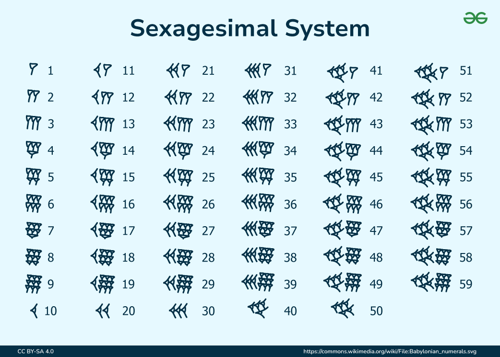
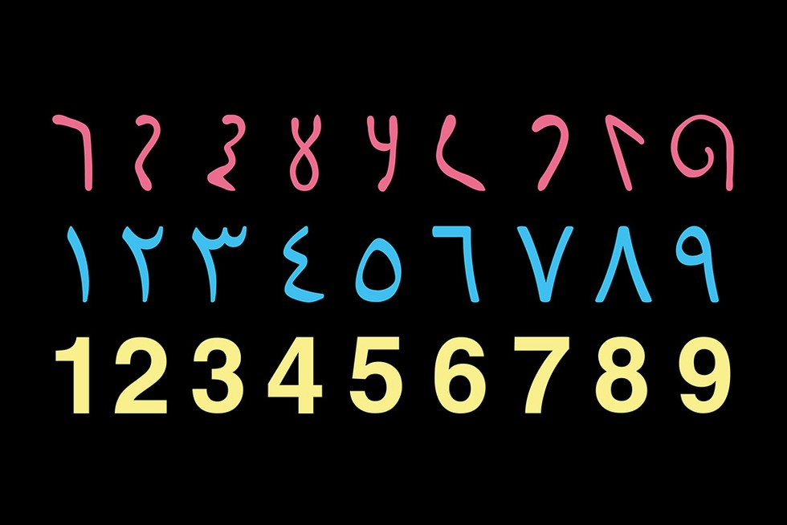

Number Systems
What is a number?
A number is a mathematical object used to count, measure, and label. Numbers serve as the fundamental elements of mathematics and have a wide variety of forms and uses depending on the context.
Number Systems
Number systems are the various ways of representing numbers. Each system has its own structure, set of rules, and operations. It is a mathematical notation for representing numbers of a given set, consistently using digits or other symbols. It allows us to perform arithmetic operations like addition, subtraction, multiplication, and division.
The Babylonian Civilization
The first true written positional numeral system is generally attributed to the ancient Babylonian civilization. It emerged around 3000 BCE influenced by earlier Sumerian systems. It was primarily used in ancient Mesopotamia for trade, astronomy, and record-keeping and was based on a sexagesimal (base-60) system.
The sexagesimal system was an ancient system of counting, calculation, and numerical notation that used powers of 60 much as the decimal system uses powers of 10. Rudiments of the ancient system survive in vestigial form in our division of the hour into 60 minutes and the minute into 60 seconds. Although it is a positional system, it lacks a true zero, which can complicate calculations and representations. The absence of zero means that the system relies on spacing to indicate the absence of a value, which can be less intuitive.
Hindu-Arabic System
While the Babylonian's Sexagesimal system was the first true positional numeral system, the Hindu-Arabic system was also one of the number systems that influenced modern mathematics and also introduced the number. The Hindu-Arabic numeral system is a decimal (base-10) system, meaning it uses ten distinct symbols to represent numbers. Each position in a number corresponds to a power of ten, allowing for the representation of large numbers with relatively few symbols. Developed between the 1st and 4th centuries CE in India and later spread to the Middle East and Europe by the 9th century. It became widely adopted in Europe during the 13th century due to the works of mathematicians like Fibonacci.